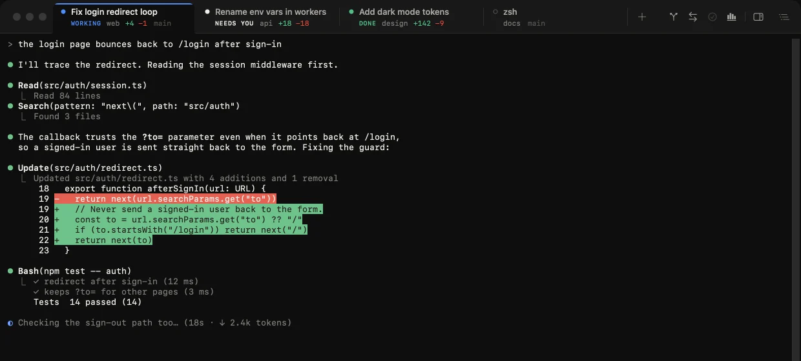
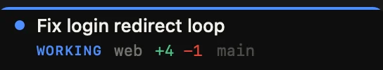
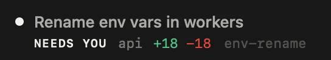
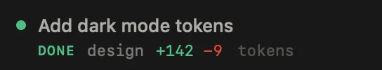
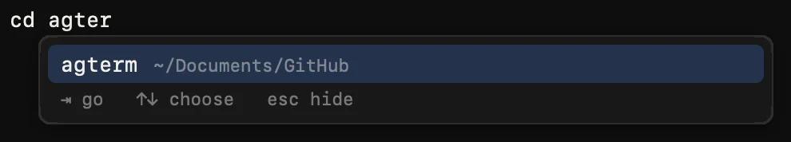

The agent is working
Working comes from Claude Code's session record, the title spinner, or output that isn't your typing.
Runs Claude Code, Codex and 21 other agent CLIs in tabs that show each task and whether it needs you. Free, for macOS 14 or later.





Claude Code writes its task into the terminal title. agterm puts that title on the tab, with the status, the folder, the lines changed and the branch.
Working comes from Claude Code's session record, the title spinner, or output that isn't your typing.
A permission prompt is on screen in any tab, or the bell rang in a tab you aren't watching.
It finished while you were elsewhere. A notification and a sound can tell you; the notification opens the tab.
Press ⌃` on a Claude Code, Codex, Grok or agl tab. Edits show as diffs and subagents show what they returned, while the agent keeps running in its terminal.
⇧⌘E opens every changed file beside the terminal: what the agent changed since it started, what's uncommitted, or the whole branch. It updates as the agent edits.
⌥⌘C drafts the message, then commits, pushes or opens a pull request.
⇧⌘N starts an agent on a new branch in a folder of its own.
Continues the conversation in Claude Code, Codex, Grok or Gemini CLI.
⇧⌘F searches past conversations and reopens one in its folder.
How it knows
agterm reads each agent's own transcript and session record, so the status, the lines changed and the spend on a tab come from the agent itself. There are no hooks or plugins to install.
Add more Claude Code or Codex logins in Settings → Accounts. When one runs out, agterm:
Also Antigravity, Kimi Code, Aider, Amp, Crush, Factory Droid, Kilo Code, Cline, Goose, Auggie, Qodo, Kiro CLI, Continue and Pi. ⌥⌘1 to ⌥⌘3 start Claude Code, Codex and Grok.
And agl, which comes with agterm: a coding agent for models on your Mac through Ollama or LM Studio. Closing its tab unloads the model.
Claude Code and Codex started in agterm get project memory and consult, with nothing to configure.
agterm-remote run sends builds and tests to a paired Mac.cd by folder nameType cd and part of a name: agterm lists matching folders from your home folder and the tabs' history. ⇥ fills in the path.
Describe what you want and the CLI you're signed in to writes it at your prompt. The model gets no tools.
AppKit and SwiftTerm, no web view. Shells live in a helper process, so quitting or updating agterm leaves your agents running.
Measured with agterm 1.0 on an M5 Max with macOS 27.2, as Activity Monitor reports it.
Download agterm.zip from GitHub Releases or run brew install --cask neel-xanom/agmux/agterm, then move agterm.app to Applications.
Programs in a terminal get the terminal's permissions. Without it, macOS blocks agents from Desktop, Documents and other apps' data, or keeps asking.
Yes. It is signed and notarized, and updates through Sparkle.
Yes, with Xcode 16 or later and the Metal toolchain: ./install.sh --adhoc builds it and installs it to /Applications.